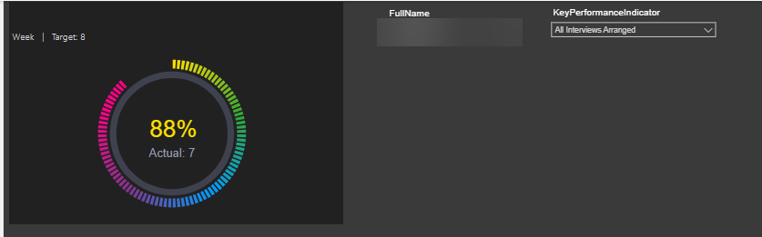
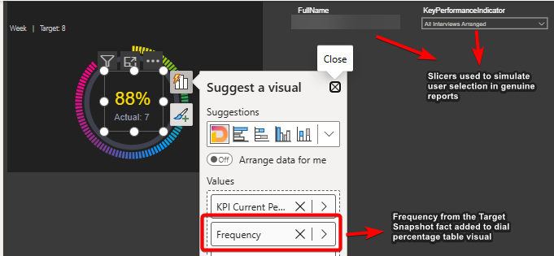
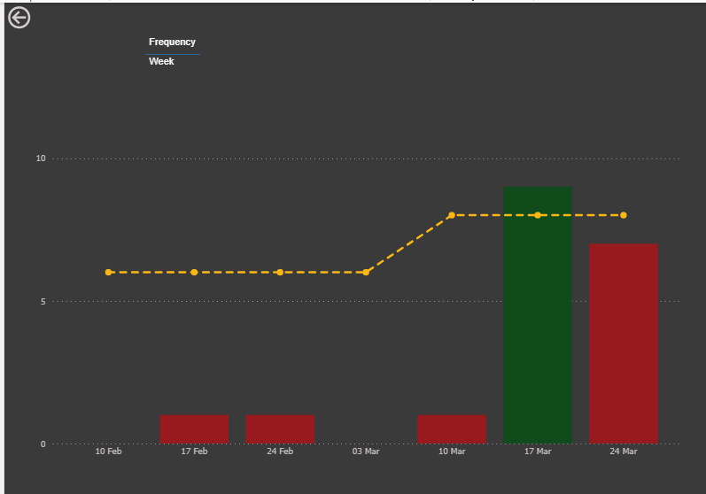
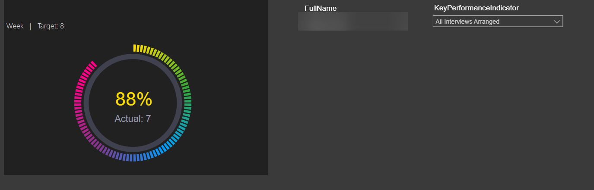
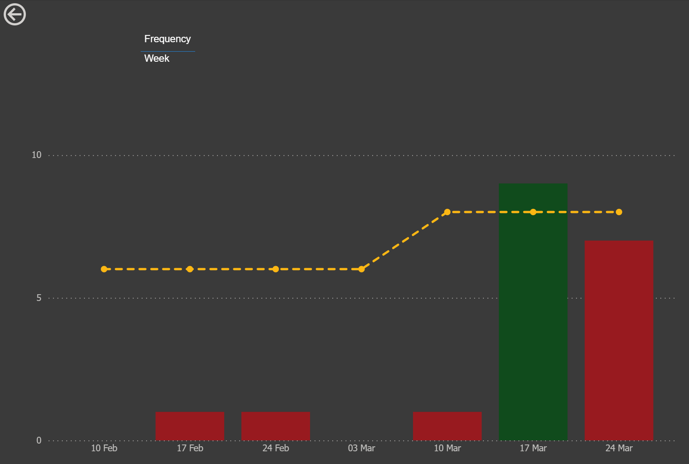
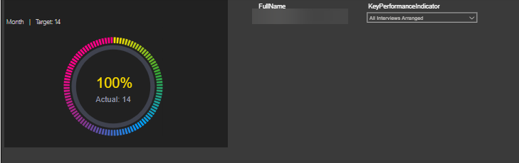
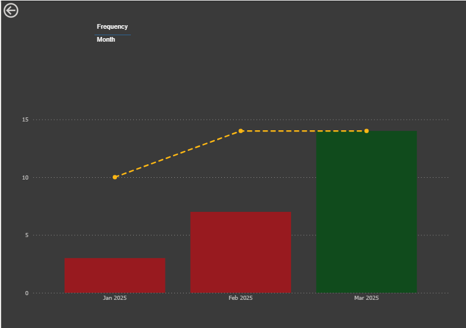

Context
We have a report which shows Actuals vs Targets for a number of different KPIs. We received a requirement to be able to view this metric over time. This was done by way of a drillthrough. So the first page would show the percentage for the current period and the user could then drillthrough to see that person's performance against that KPI over time.
Different consultants operated at different reporting frequencies for the same KPIs. Some consultants had weekly targets while others had monthly targets. When users drilled through into historical performance, Power BI could not automatically persist the originating frequency to the destination page.
This investigation was about identifying an automated way to achieve this and remove the need for the user to explicitly set the frequency on the drillthrough page which shows the performance over time.
Background
As part of the previous dev work relating to performance history over time, we wanted to be able to drill through from the team / individual page of Managers PvT to the history page and have the column chart x-axis reflect the frequency chosen in the original page.
We were unable to achieve this as part of that dev. Instead we added a slicer onto the history page so the user, after drilling through, could then select the frequency desired. This investigation piece is therefore to see if there is a way to do this automatically.
Investigation
The investigation was approached as follows:
- Can we prove that the frequency selection chosen in the first page is "carried through" to the history page? In other words, without breaking anything in the origin page, can we ensure that when we navigate to the history page, it is filtered by the frequency chosen / selected in the first page?
- Can we use this knowledge to automatically select the correct x-axis? Using a slicer or a measure or something else?
- Could we use bookmarks - so when we drill through from first page, we actually go to a bookmark showing the correct frequency rather than a true drill through page?
- Are there any other (outside the box) possibilities worth considering?
Step 1
If we consider the Consultant Dashboard drillthrough and the individual page of the Performance vs Target report, the current implementation does not actually consider frequency. Instead we drill through from the actual vs target % measure which carries across the chosen KPI. The team / individual information is also filtered due to other filters on those original pages.
The first step was therefore to confirm it is possible that when drilling through to the history page, the frequency is also "carried" across. The way we did this was to enhance the dial percentages.
The "dial percentage" visual was not actually a native dial. It was a heavily styled table visual showing only the first visible cell while the remaining structure was rendered transparent. This gave us a way to inject additional hidden drillthrough context without changing the visible UX.
By adding the frequency column from the target snapshot fact table into this table visual, we now have context of frequency while also not breaking anything in the page.
We could then change the drillthrough mechanism to drill through based on the frequency selection. This essentially narrows down the drillthrough to just one frequency (plus the previous filters of team / individual as before).
Step 2
The original idea is for this unique frequency selection to then be used in a measure which could be set as the x-axis in the column chart. The idea being a simple IF statement along the lines of if frequency is 'week' then use week commencing on the axis, otherwise if frequency is 'month' use month commencing.
With Power BI visuals, unfortunately the axes are determined by table columns or calculated columns. It's not possible to have a measure be the x- axis (or y-axis).
Calculated columns cannot be used to solve this because they are calculated at the point of refresh / initial load and are then static. If we think of Power BI as having separate layers like a lasagne, the data layer is below the report layer so any changes the user makes in the report layer, do not then go back to the data layer.
The one exception to being able to use measures is when using a Field parameter. A Field parameter is essentially a bucket where you can throw in columns and/or measures. A slicer on the page then dictates which of these columns/measures is used in the visual.
So some time was spent investigating the use of Field parameters on the x-axis. However despite trying to automate this process either directly or using a hidden and related slicer, no way was found for this mechanism to work automatically upon drilling through. In other words, Field parameters could not be used without the slicer.
Step 3
Bookmarks are not a favourite option for the author. And in this case, the inability to "carry" context means that this is unlikely to be the answer here.
Bookmarks are usually used in conjunction with buttons which essentially navigate to different pages depending on options chosen on the original page. However the page you are navigated to is essentially static and so does not change depending on choices made in the origin page. This would potentially mean we would need a different page for each combination of frequency and KPI. It feels unmanageable.
The advantage of a drill through is that you carry the context from the original page and are focussing on more curated data. While this could be replicated by bookmarks and buttons, we have seen from the Consultant Dashboard that there is no substitute for the real thing.
This approach would also increase the amount of maintenance since you would need a drillthrough page per frequency (and possibly KPI) and would potentially need some UI changes to the origin page as well.
Another approach is potentially to use bookmarks but have two charts in the drill through page and make the relevant chart visible on the fly depending on what the chosen frequency is in the first page. Unfortunately this wont work because you have to specify a layer order for the two chart visuals (z-order). So there will always be one behind the other. We could get the top one to show but there is no way to programmatically make a chart visible/invisible.
Step 4
The problem we were having was an inability to change what was displayed on the x-axis when drilling through.
This is because Power BI does not allow you to use measures or get to the underlying code which defines the visual.
One way around this is to build your own visual using code. Then you have freedom to define the x axis however you want.
I have done a rough PoC to show how this might work:

Changes made to this original page in this image explained below:

And when we drill through:

The x-axis dynamically changes depending on the frequency of the target for the given KPI:




This custom visual approach allows us the rendering logic to exist outside the constraints of the Power BI visual configuration. And hence we have more control and flexibility in this approach.
Summary
The requirement cannot be met using native Power BI functionality.
A solution has been found using custom visuals by coding our own chart and grid visuals.
Advantages
Complete flexibility in terms of design and functionality. Not just axes but also, for example, tooltips, column width or plot area.
We have used this approach for both the dials and the dial percentages so this wouldn't be a brand new technique.
Cleaner UX as no requirement for slicer or card informing user to select correct frequency on drill through pages.
In addition there was chat initially on having the consultant grid sorted by latest week or month rather than full name. This is not possible with native matrix visual but could be addressed using this approach. Important to note that any sort could not be over-ridden by the user however (there is no user interactivity).
Disadvantages
Steep learning curve to be able to write the code required.
Custom visuals can be slower to load.
Extra effort compared to using the native visuals (is the juice worth the squeeze?)
Interactivity between these custom-built visuals and other visuals can be tricky to get right (not an issue here as there are no other visuals on page and no expectation of cross-filtering or cross-highlighting).
What Happened Next?
The team decided against the custom visual solution and have kept the drillthrough page as-is with a frequency selector for the user after drillthrough.